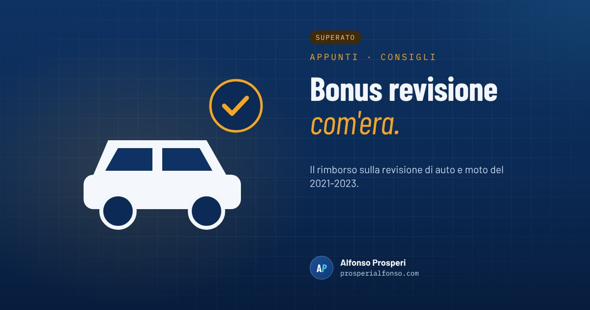

Il bonus veicoli sicuri era un contributo di 9,95 euro per i proprietari di auto e moto che facevano la revisione. Copriva l'aumento della tariffa della revisione introdotto nel 2021.
Come funzionava
- Valeva per le revisioni fatte nel periodo dell'iniziativa, tra il 2021 e il 2023.
- Si richiedeva online sulla piattaforma del Ministero dei Trasporti, accedendo con SPID o CIE.
- Il rimborso arrivava sul conto corrente indicato, dopo la verifica dei dati; lo stato della richiesta si poteva controllare sulla piattaforma, cercando la targa.
- Si poteva chiedere un solo contributo, per un solo veicolo, per tutta la durata dell'iniziativa, anche avendo più veicoli.
- Per i veicoli cointestati, la domanda spettava al primo intestatario della carta di circolazione.
L'iniziativa riguardava solo quel periodo. Per sapere se ci sono nuove misure sul costo della revisione, la fonte giusta è il sito del Ministero delle Infrastrutture e dei Trasporti.